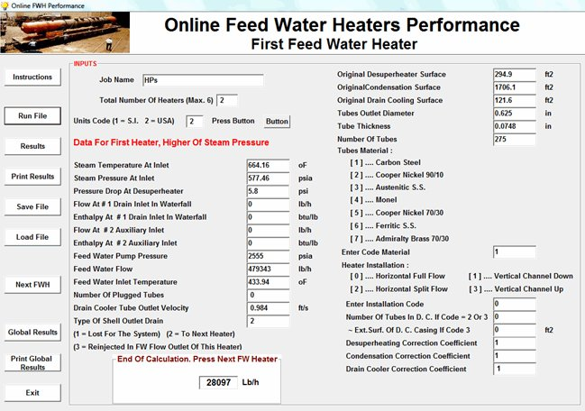
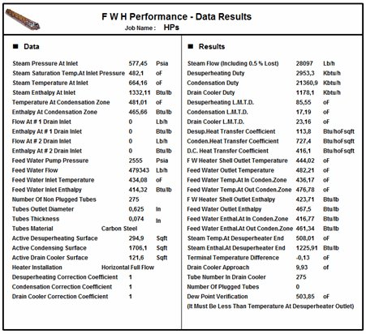
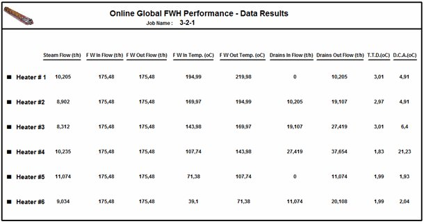

In-line Feedwater Heaters Performance Software
Performance calculation of a complete battery of up to six LP and HP feedwater heaters in line.
A complete battery of feedwater heaters
This program calculates the performance of a complete battery of in-line feedwater heaters, up to six heaters (LP and HP), with the drains of each heater cascading to the next heater, pumped forward into the feedwater flow with a booster pump, or lost to the outside.
The heaters are calculated one after the other, starting with the heater at the highest steam pressure. The drains of each heater are taken into account in the next one, and a global results sheet summarizes the whole battery.
Data entry for each heater
For each heater the user enters the steam conditions, drains coming from the previous heater, feedwater pump pressure, flow and inlet temperature, original desuperheating, condensing and drain cooling surfaces, tube data, number of plugged tubes, type of installation and type of shell outlet drain. At the end of each calculation the program gives the steam flow and passes to the next heater.

Results of each heater
For each heater the results give the steam flow, the duty and heat transfer coefficient of each zone, feedwater outlet temperature, terminal temperature difference, drain cooler approach and dew point verification.

Global results
The global results sheet shows, for each of the six heaters, the steam flow, feedwater flow in and out, feedwater inlet and outlet temperature, drain flows in and out, terminal temperature difference (TTD) and drain cooler approach (DCA).

Documentation
See the complete example with every input and results window in the program documentation:
In-line Feedwater Heaters Performance – full documentation (PDF)Related programs
- Feedwater Heater Performance – performance of a single existing feedwater heater
- Feedwater Heater – thermal and mechanical design of feedwater heaters per HEI
- Deaerator – thermal and mechanical design of deaerators
Condensers, feedwater heaters, deaerators, district heating, natural gas heaters and more, with a description of each program on the home page.
See all programs →